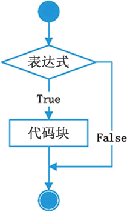
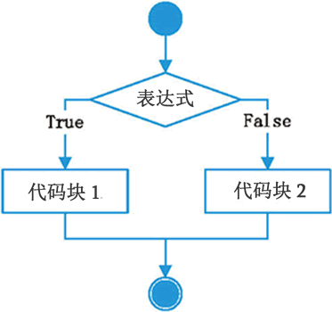
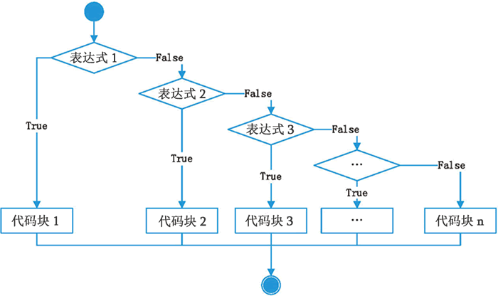

首页 > Python > Python流程控制
Python if else条件语句详解
前面我们看到的代码都是顺序执行的，也就是先执行第1条语句，然后是第2条、第3条……一直到最后一条语句，这称为顺序结构。
但是对于很多情况，顺序结构的代码是远远不够的，比如一个程序限制了只能成年人使用，儿童因为年龄不够，没有权限使用。这时候程序就需要做出判断，看用户是否是成年人，并给出提示。
在 Python 中，可以使用 if else 语句对条件进行判断，然后根据不同的结果执行不同的代码，这称为选择结构或者分支结构。
Python 中的 if else 语句可以细分为三种形式，分别是 if 语句、if else 语句和 if elif else 语句，它们的语法和执行流程如表1所示。
一旦某个表达式成立，Python 就会执行它后面对应的代码块；如果所有表达式都不成立，那就执行 else 后面的代码块；如果没有 else 部分，那就什么也不执行。
执行过程最简单的就是第一种形式——只有一个 if 部分。如果表达式成立（真），就执行后面的代码块；如果表达式不成立（假），就什么也不执行。
对于第二种形式，如果表达式成立，就执行 if 后面紧跟的代码块1；如果表达式不成立，就执行 else 后面紧跟的代码块2。
对于第三种形式，Python 会从上到下逐个判断表达式是否成立，一旦遇到某个成立的表达式，就执行后面紧跟的语句块；此时，剩下的代码就不再执行了，不管后面的表达式是否成立。如果所有的表达式都不成立，就执行 else 后面的代码块。
总起来说，不管有多少个分支，都只能执行一个分支，或者一个也不执行，不能同时执行多个分支。
【实例1】使用第一种选择结构判断用户是否符合条件：
【实例2】改进上面的代码，年龄不符合时退出程序：
【实例3】判断一个人的身材是否合理：
需要强调的是，Python 是一门非常独特的编程语言，它通过缩进来识别代码块，具有相同缩进量的若干行代码属于同一个代码块，所以你不能胡乱缩进，这样很容易导致语法错误。更多关于缩进的内容请转到《Python if else对缩进的要求》。
布尔类型（bool）只有两个值，分别是 True 和 False，Python 会把 True 当做“真”，把 False 当做“假”。
对于数字，Python 会把 0 和 0.0 当做“假”，把其它值当做“真”。
对于其它类型，当对象为空或者为 None 时，Python 会把它们当做“假”，其它情况当做真。比如，下面的表达式都是不成立的：
【实例】if elif 判断各种类型的表达式：
但是对于很多情况，顺序结构的代码是远远不够的，比如一个程序限制了只能成年人使用，儿童因为年龄不够，没有权限使用。这时候程序就需要做出判断，看用户是否是成年人，并给出提示。
在 Python 中，可以使用 if else 语句对条件进行判断，然后根据不同的结果执行不同的代码，这称为选择结构或者分支结构。
Python 中的 if else 语句可以细分为三种形式，分别是 if 语句、if else 语句和 if elif else 语句，它们的语法和执行流程如表1所示。
| 语法格式 | 执行流程 |
|---|---|
|
if 表达式： 代码块 |
 |
|
if 表达式： 代码块 1 else： 代码块 2 |
 |
|
if 表达式 1： 代码块 1 elif 表达式 2： 代码块 2 elif 表达式 3： 代码块 3 ...//其它elif语句 else： 代码块 n |
 |
以上三种形式中，第二种和第三种形式是相通的，如果第三种形式中的 elif 块不出现，就变成了第二种形式。另外，elif 和 else 都不能单独使用，必须和 if 一起出现，并且要正确配对。
对语法格式的说明：- “表达式”可以是一个单一的值或者变量，也可以是由运算符组成的复杂语句，形式不限，只要它能得到一个值就行。不管“表达式”的结果是什么类型，if else 都能判断它是否成立（真或者假）。
- “代码块”由具由相同缩进量的若干条语句组成。
-
if、elif、else 语句的最后都有冒号
:，不要忘记。
一旦某个表达式成立，Python 就会执行它后面对应的代码块；如果所有表达式都不成立，那就执行 else 后面的代码块；如果没有 else 部分，那就什么也不执行。
执行过程最简单的就是第一种形式——只有一个 if 部分。如果表达式成立（真），就执行后面的代码块；如果表达式不成立（假），就什么也不执行。
对于第二种形式，如果表达式成立，就执行 if 后面紧跟的代码块1；如果表达式不成立，就执行 else 后面紧跟的代码块2。
对于第三种形式，Python 会从上到下逐个判断表达式是否成立，一旦遇到某个成立的表达式，就执行后面紧跟的语句块；此时，剩下的代码就不再执行了，不管后面的表达式是否成立。如果所有的表达式都不成立，就执行 else 后面的代码块。
总起来说，不管有多少个分支，都只能执行一个分支，或者一个也不执行，不能同时执行多个分支。
【实例1】使用第一种选择结构判断用户是否符合条件：
age = int( input("请输入你的年龄：") )
if age < 18 :
print("你还未成年，建议在家人陪同下使用该软件！")
print("如果你已经得到了家长的同意，请忽略以上提示。")
#该语句不属于if的代码块
print("软件正在使用中...")
运行结果1：
请输入你的年龄：16↙
你还未成年，建议在家人陪同下使用该软件！
如果你已经得到了家长的同意，请忽略以上提示。
软件正在使用中...
请输入你的年龄：24↙
软件正在使用中...
【实例2】改进上面的代码，年龄不符合时退出程序：
import sys
age = int( input("请输入你的年龄：") )
if age < 18 :
print("警告：你还未成年，不能使用该软件！")
print("未成年人应该好好学习，读个好大学，报效祖国。")
sys.exit()
else:
print("你已经成年，可以使用该软件。")
print("时间宝贵，请不要在该软件上浪费太多时间。")
print("软件正在使用中...")
运行结果1：
请输入你的年龄：16↙
警告：你还未成年，不能使用该软件！
未成年人应该好好学习，读个好大学，报效祖国。
请输入你的年龄：20↙
你已经成年，可以使用该软件。
时间宝贵，请不要在该软件上浪费太多时间。
软件正在使用中...
【实例3】判断一个人的身材是否合理：
height = float(input("输入身高（米）："))
weight = float(input("输入体重（千克）："))
bmi = weight / (height * height) #计算BMI指数
if bmi<18.5:
print("BMI指数为："+str(bmi))
print("体重过轻")
elif bmi>=18.5 and bmi<24.9:
print("BMI指数为："+str(bmi))
print("正常范围，注意保持")
elif bmi>=24.9 and bmi<29.9:
print("BMI指数为："+str(bmi))
print("体重过重")
else:
print("BMI指数为："+str(bmi))
print("肥胖")
运行结果：
输入身高（米）：1.7↙
输入体重（千克）：70↙
BMI指数为：24.221453287197235
正常范围，注意保持
需要强调的是，Python 是一门非常独特的编程语言，它通过缩进来识别代码块，具有相同缩进量的若干行代码属于同一个代码块，所以你不能胡乱缩进，这样很容易导致语法错误。更多关于缩进的内容请转到《Python if else对缩进的要求》。
在其他语言中（如 C语言、C++、Java 等），选择结构还包括 switch 语句，也可以实现多重选择，但是在 Python 中没有 switch 语句，所以当要实现多重选择的功能时，只能使用 if else 分支语句。
if else 如何判断表达式是否成立
上面说过，if 和 elif 后面的“表达式”的形式是很自由的，只要表达式有一个结果，不管这个结果是什么类型，Python 都能判断它是“真”还是“假”。布尔类型（bool）只有两个值，分别是 True 和 False，Python 会把 True 当做“真”，把 False 当做“假”。
对于数字，Python 会把 0 和 0.0 当做“假”，把其它值当做“真”。
对于其它类型，当对象为空或者为 None 时，Python 会把它们当做“假”，其它情况当做真。比如，下面的表达式都是不成立的：
"" #空字符串
[ ] #空列表
( ) #空元组
{ } #空字典
None #空值
【实例】if elif 判断各种类型的表达式：
b = False
if b:
print('b是True')
else:
print('b是False')
n = 0
if n:
print('n不是零值')
else:
print('n是零值')
s = ""
if s:
print('s不是空字符串')
else:
print('s是空字符串')
l = []
if l:
print('l不是空列表')
else:
print('l是空列表')
d = {}
if d:
print('d不是空字典')
else:
print('d是空字典')
def func():
print("函数被调用")
if func():
print('func()返回值不是空')
else:
print('func()返回值为空')
运行结果：
b是False
n是零值
s是空字符串
l是空列表
d是空字典
函数被调用
func()返回值为空
关注公众号「站长严长生」，在手机上阅读所有教程，随时随地都能学习。内含一款搜索神器，免费下载全网书籍和视频。

微信扫码关注公众号